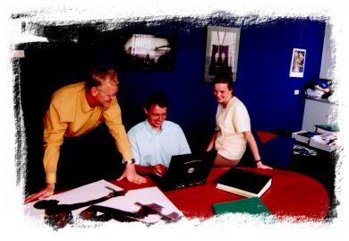

Verbeterde concurrentiepositie door innovatieve klantenservice
De strijd om de hegemonie over de SMD markt wordt hard gevoerd.
In de visie van het Taiwanese Yageo, is meer onderscheid nodig dan all��n een goede prijs en kwaliteit. Innovatieve klantenservice is de onderscheidende factor die leidt tot een verbeterde concurrentiepositie. Hierbij heeft Springsite een belangrijke rol vervuld.
|
|
|
Yageo is een Taiwanese onderneming en behoort tot de wereldtop van SMD-producenten (Surface Mount Devices; zie kader). Yageo wil in 2003 de 1 miljard Dollar omzet passeren en groeien van een 16 % wereldmarktaandeel in 1999 tot een 25 % aandeel in 2003.
|
 |
Korte omschakeltermijn
Om deze ambitieuze groeidoelstelling te verwezenlijken heeft de onderneming in haar operationele strategie twee speerpunten gedefinieerd. Als eerste de acquisitie van concurrerende ondernemingen en als tweede een voortdurende innovatie van de klantenservice. In Yageo's visie is meer concurrentie-onderscheid nodig dan all��n prijs en kwaliteit. Innovatie in haar klantenservice moet leiden tot een verbeterde concurrentiepositie van Yageo (spreek uit als "ya-tsjoo").
In augustus 2000 werd door Yageo een onderdeel van Philips ge-acquireerd (Philips Passive Components). Philips wilde zich specialiseren in active components en dit winstgevende Philips onderdeel met haar naam, faam en klanten paste uitstekend in de groeistrategie van Yageo.
De naam werd omgedoopt tot Phycomp en is nu ��n van de productmerknamen van Yageo. Voor de nieuwe Yageo-Phycomp organisatie had deze verandering fikse consequenties. Ook omdat de hele administratieve organisatie �n automatiseringsystemen omgeschakeld moesten worden. Het ontvlechtingproces met de Philips organisatie mocht maximaal ��n jaar duren.
|

SMD worden gebruikt in alle moderne elektronica toepassingen.
Zie SMD-kader aan het einde van dit artikel.
|
Open inschrijving
Gert Jan Visser was Global IT Manager bij het Yageo-Phycomp hoofdkantoor in Roermond ten tijde van de omschakeling.
"Ons productdatasysteem binnen Philips heette Prime. Wij mochten dit nog maximaal 1 jaar gebruiken. Wij voeren meer dan 100.000 artikelen, dus een productdatasysteem is onmisbaar voor ons.
Ik organiseerde een open inschrijving voor de vervanging van ons Prime systeem op basis van nieuwe technologie.
Veel bedrijven stuurden een offerte.
Die ontvangen offertes gaven grote verschillen te zien in werkmethodes en prijzen. Het verschil tussen de goedkoopte en de duurste aanbieding was een factor tien!
Met Springsite hadden wij al een positieve ervaring opgedaan bij de implementatie van een E-commerce oplossing bij ons Amerikaans distributiecentrum.
Bovendien was hun aanbieding de scherpste."
"Maar de technologiekeuze vond ik veel belangrijker dan de prijs.
Het was [is] onmogelijk de toekomst te voorspellen binnen onze turbulente wereld en de markt dwingt ons tot een steeds scherpere
werkwijze."
"Ik wilde New Prime realiseren in een modern en flexibel software raamwerk.
Ik wist niet wat ik allemaal nog op mijn pad zou tegenkomen. De Springsite Server [Internet] technologie bood die omgeving.
De korte communicatielijnen met een dergelijke kleine firma en het inlevingsvermogen van hun mensen waren ook een sterk pluspunt voor ons.
Small is beautiful maar ook een potentieel risico. Daarom is onze continu�teit gewaarborgd door formele afspraken over het gebruik van de [Java] broncode."
|
"Het verschil tussen de goedkoopte en de duurste aanbieding was een factor tien!"
|
Marketing wensen
Tegelijkertijd leefden bij de Yageo-Phycomp Marketing afdeling ook sterke idee�n voor een onafhankelijke invulling van de toekomst.
Rob Derksen is Strategic Marketing Manager bij Yageo-Phycomp en is een markt- en productspecialist.
"Ik wist al meer dan drie jaar wat ik wilde. Het is eigenlijk vrij simpel. Ik geloof in het Web als communicatiemedium.
Voor onze klanten [inkopers en ontwikkelaars bij elektronicaproducenten] hadden alle SMD-producenten spoedig na de wereldverovering door het Internet al hun productdata op het Web geplaatst,
maar dat was een [informatie] woud waar niet doorheen te komen was. "
"Met een intelligent selectiesysteem wilden wij onze klanten loodsen tot de juiste artikelkeuze na de beantwoording van slechts een paar vragen.
In de oude situatie kon slechts gezocht worden als de klant het juiste 12-cijferige artikelnummer wist.
Ik wilde een zogenaamde parametric search. Daarbij klikt onze klant een paar selectiecriteria aan zoals maximale spanning, tolerantie, waarde en verpakkingwijze en zo wordt de keuze binnen enkele seconden teruggebracht tot een handjevol producten. Ik wilde nog meer.
Onze concurrenten werken met soortgelijke meercijferige artikelnummers, maar die zijn niet uitwisselbaar."
"Ik wilde onze klanten in staat stellen om te zoeken in onze productgegevens op basis van een artikelnummer van een concurrent.
Voor het vinden van h�t artikel uit een berg van meer dan honderdduizend piepkleine onderdeeltjes wilde ik drie mogelijkheden bieden. Als eerste op basis van het Yageo-Phycomp nummer; ten tweede op basis van de [andere] artikelnummers die onze [meerdere] concurrenten hanteren en ten derde op basis van productkenmerken."
|
|
Zelfstandig informatie publiceren en beheren
Ingrid van der Velden is Global Marketing Communication Manager voor Yageo-Phycomp:
"Wij staan bol van de informatie; dit hele gebouw staat bol van de informatie. In onze visie wordt onze concurrentiekracht vergroot als wij deze informatie op een heldere wijze aanbieden aan onze klanten. In de oude situatie was onze informatiewebsite een ge�soleerd systeem, zonder integratie met het productdatasysteem. Daarbij waren wij bovendien voor iedere wijziging afhankelijk van een extern bureau wat vertragend werkte en veel geld kostte. Dan verzaakt het doorvoeren van kleine wijzigingen, aanvullingen of verbeteringen al snel. Ik wilde onafhankelijk van anderen z�lf in staat zijn om teksten te corrigeren en te publiceren zonder in allerlei technische zaken te duiken. Ik wilde de reactiesnelheid naar onze klanten verhogen. Bovendien wilde ik de marketing- en de productinformatie volledig integreren."
|
|
Uitdaging
Voor Gert Jan Visser was het de uitdaging om de verplichting van een nieuw productdatasysteem �n de marketingwensen te combineren �n te realiseren.
Gert Jan: "Wij wilden h��l veel. Niet van alle zaken was het duidelijk hoe deze ingevuld moesten worden. Het is een proces van een voortschrijdend inzicht. Terwijl het proces vorderde, werd duidelijker wat het resultaat zou moeten zijn en hoe wij dit gingen realiseren. Het gekozen software platform ondersteunt deze werkwijze."
"Vanaf het begin was het mij w�l duidelijk dat om alle artikelnummers van iedere concurrent te herleiden tot onze artikelnummers, een systeem met enorme kruistabellen een vroege dood zou sterven. Technisch zou dat veel te traag werken voor een online toepassing en die methode zou beslist niet onderhoudbaar zijn, als wij alles �berhaupt al ingevoerd zouden krijgen. Daarom hebben wij vanaf het begin al gekozen voor een aanpak waarbij de generieke artikelnummerlogica van iedere producent wordt gebruikt om tot een herleiding naar onze artikelnummers te komen. Springsite heeft die wens goed opgepakt en slim uitgevoerd."

Rob Derksen, Gert Jan Visser, Ingrid van der Velden.
Succes door motivatie en samenwerking.
|
"Wij wilden h��l veel..."
|
Steeds meer wensen
Gaandeweg het traject werden steeds meer wensen ingevuld.
Met de Content Management en de News Engine onderdelen van de Springsite Server communiceert de Marketing afdeling nu met haar klanten. Ingrid van der Velden: "Dankzij Content Management kunnen wij z�lf de inhoud van de website beheren zonder externe experts nodig te hebben. Met de News Engine kunnen onze klanten zichzelf abonneren op ons E-News door zichzelf in te schrijven op nieuwscategorie�n. Zij ontvangen daarover wekelijks een gepersonaliseerde update. De informatie is precies op maat, niet meer en niet minder. Ook kunnen onze abonnees hun eigen profiel aanpassen. Met de Springsite Content Management kan ik dagelijks nieuwe informatie over artikelen en over de markt toevoegen. Klanten voor wie dat relevant is, ontvangen automatisch een nieuws E-mail daarover."
Deze succesvolle integratie van productdatamanagement en productmarketing als dienstverlening naar de klanten van Yageo-Phycomp is niet onopgemerkt gebleven. De Yageo moederorganisatie heeft dit systeem thans ook in gebruik genomen. Rob Derksen noemt graag nog een voorbeeld over de dynamiek van de nieuwe werkomgeving: "Op een bepaald moment hebben wij een 'alternatief productvoorstel' ingevoerd, als er geen artikel beschikbaar was met een exacte passing voor de klant. Wij merkten dat sommige klanten deze alternatieven zondermeer bestelden. Het was blijkbaar niet duidelijk genoeg dat het een alternatief voorstel was. Wij hebben de presentatie daarvan toen zelf anders gedefinieerd. Dat hadden wij de volgende dag al klaar: ge�ntegreerd, consistent en zonder tussenkomst van externe experts."
|
"[wij bieden nu]
informatie precies op maat, niet meer en niet minder."
|
Continue proces van innovatie
Gert Jan Visser geeft een samenvatting over het verloop van dit project: "Doordat wij de juiste keuzes gemaakt hebben, profiteren wij nu van de vrijheid om steeds opnieuw wijzigingen in onze werkwijze en systemen door te voeren. Bij de start van het project waren alle idee�n nog open. Het heeft zich vertaald in een continue proces van innovatie."
Dit "continue proces van innovatie" van klantenservice is wat de Yageo organisatie zich tot doel heeft gesteld en biedt dat vandaag. Klanten van Yageo profiteren duidelijk van deze nieuwe informatievoorziening want het aantal bezoekers van de site groeit met 15% per maand, iedere maand. Momenteel zijn er al zo'n 19.000 bezoekers per maand. Yageo verscherpt zo haar concurrentiepositie door intelligent informatiegemak te bieden aan haar klanten. Dat is precies wat de organisatie gedefinieerd heeft als invulling van haar visie. Onder andere dankzij Springsite Internet technologie is dit succesvol gerealiseerd en draagt bij aan een ambitieus groeiresultaat voor Yageo.
|
"[dit project]
heeft zich vertaald in een continue proces van innovatie."
|
SMD
Yageo-Phycomp heeft zich gespecialiseerd in keramische SMD: Surface Mount Devices. Dit zijn hoofdzakelijk passieve componenten als weerstanden en condensatoren maar bijvoorbeeld ook keramische antennes voor mobiele telefoons.
Condensatoren en weerstanden in SMD-uitvoering zijn piepkleine 'blokjes' die direct op een printplaat worden gesoldeerd. Yageo is in de MLCC-wereld (Multi Layer Ceramic Capacitors) een groene voortrekker door bij de productie gebruik te maken van wateroplosbare bindersystemen en loodvrij keramiek en de inzet van milieu-sparende verpakkingen. De belangrijkste evolutiedrijfkracht is steeds 'capaciteit per volume' [zo klein mogelijk]. De verkoop van passieve componenten bij Yageo-Phycomp heeft een jaarlijkse volumegroei van 15 tot 20 %, al 20 jaar lang.
In de hele wereld zijn maar een handjevol bedrijven die deze hoogwaardige SMD componenten kunnen produceren, maar de concurrentie is hevig.
Het afnamepatroon van SMD fluctueert met de golfbewegingen in de wereldconjunctuur. Door de harde concurrentie let iedere producent scherp op de productiekosten. Een innovatieve dienstverlening is nu een speerpunt in Yageo's verbetering van haar concurrentiepositie. Door informatie op intelligente wijze aan te bieden is het voor Yageo mogelijk geworden hiervan te profiteren in de felle concurrentiestrijd om de hegemonie over de wereldmarkt voor componenten.
|
|